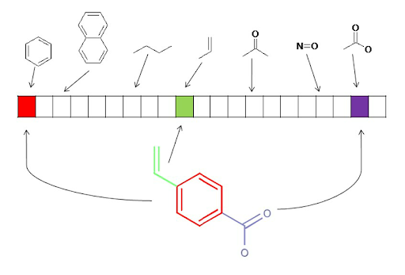
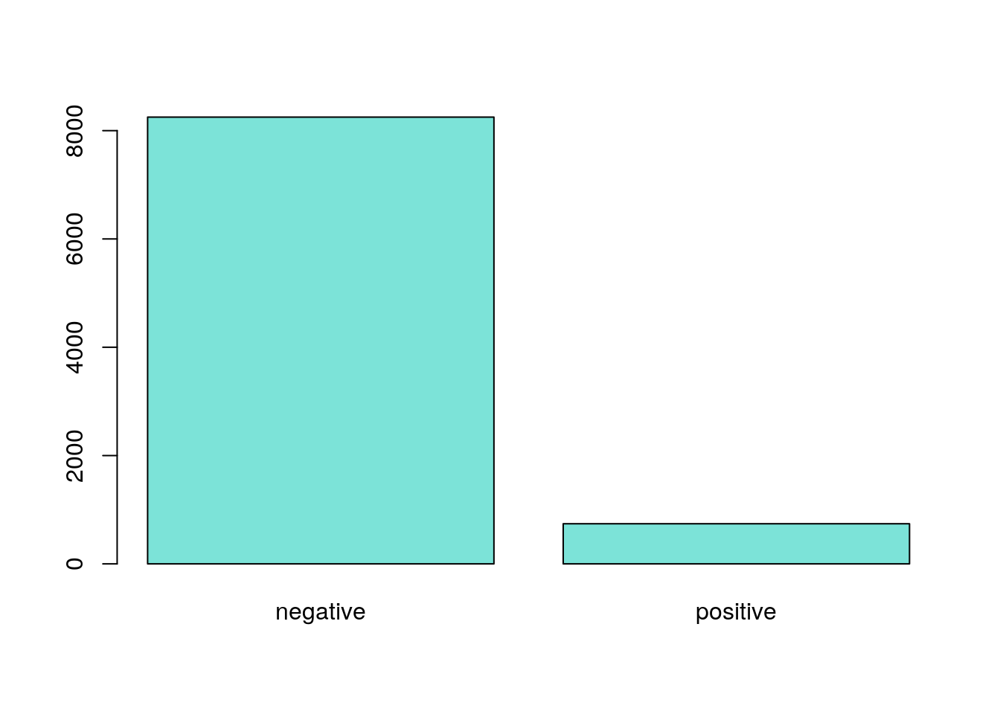
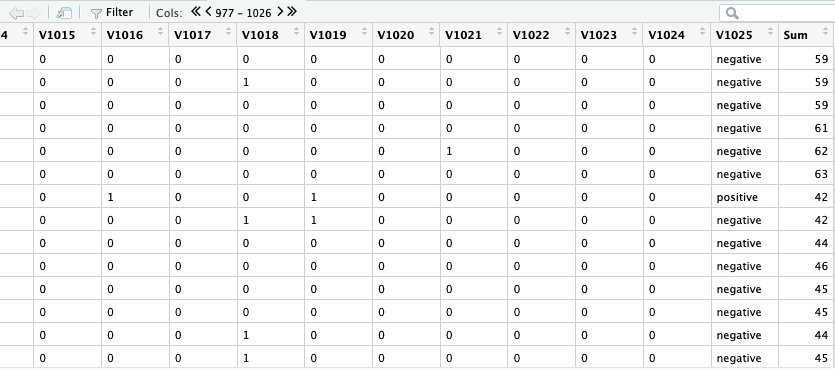

Team Names: Alyssa Humphreys (anh3245) Sergio Chavez (sc56372) Joelle Kenty (jck2685) Yunseo Chang (yc26468) Jennifer Garza (jg62768) <<<<<<< HEAD Pablo Gomez
Project Title: “Let’s Find Toxic Chemicals!”
Project Goals:
Our goal in this project is to first index our data so that we can properly analyze and classify connections between toxicity levels and their binary molecular fingerprint. We are using data taken from machine learning methods to identify toxicity levels in special chemicals. Because this data set essentially only consists of two variables (molecular fingerprint and experimental class of toxicity), we are going to index our data and look for any correlations. Link to data: http://archive.ics.uci.edu/ml/machine-learning-databases/00508/
What is a binary molecular fingerprint?

Binary molecular fingerprints refers to the way the structure of a molecule is encoded. The fingerprint is a series of binary digits that represent the presence or absence of particular substructures in the molecule. For this project, the data frame contained 1024 different binary molecular fingerprints.
Data Breakdown:
Data Breakdown: This data set has a total of 1025 columns; the first 1024 reflect the binary molecular fingerprints taken from different chemicals. The last column returns the experimental class (positive or negative), which tells us whether or not the corresponding fingerprint considered toxic or not. This dataset was used to develop classification QSAR models for the discrimination of extemely toxic or non toxic chemicals. The molecular fingerprints were calculated for sets of chemicals provided to predict acute oral systemic toxicity for filling regulatory needs >>>>>>> 6247ee3f5ee4621ade09f09f3a059e881469f804
## Warning in `[.data.frame`(OralTox2, -c(1025), drop = FALSE): 'drop' argument will be ignoredPreview of Dataset
Exploratory Data Analysis
## # A tibble: 2 × 2
## V1025 number_rows
## <fct> <int>
## 1 negative 8250
## 2 positive 741
As seen in the model above, there is a significant difference between the proportion of non-toxic and toxic chemicals in our dataset. More specifically, there were 8,251 non-toxic chemicals and 741 toxic chemicals, representing 92% and 8% of our dataset, respectively. Due to this marked difference, we wanted to better understand the relationship between a chemical’s molecular footprint and its toxicity. Thus, we came up with several hypotheses:
Hypothesis 1:
The increased presence of biomolecular components (structures) is associated with higher toxicity levels.
Hypothesis 2:
Certain binary molecular components are more important than others in determining toxicity levels. (An example of this might be if the 10th binary molecular component is highly correlated with toxicity).
Analysis
To test our first hypothesis, we added an additional column that summed up the total for each row. We were quickly able to disprove our assumption that a higher sum would indicate a higher level of toxicity. For instance, in the table below, we can clearly see that some negative classifications returned higher values than the positive classifications. Thus, this disproved our hypothesis.

We had difficulty with visualizing our data during the exploratory analysis process since our data did not have precise variables. Due to the lack of findings in our exploratory analysis, we relied more heavily on classification tests to consider our second hypotheses.
Modeling and Assessment of Model Performance
We used a general linear regression model to better understand our data and to identify any patterns that it may have. The goal was to determine whether the presence of any specific structures in the fingerprint carried more weight in determining toxicity levels than others (Hypothesis 2). Using this information, we would like to then be able to make predictions about chemicals’ toxicity if given a whole new unknown dataset. To create this model, we used a train-test split to evaluate the performance of our machine learning algorithm.

Our model was able to evaluate the dataset and make predictions on whether a molecular binary fingerprint would return positive or negative with 86.96% accuracy. In the table below, the model was run, and although we do see that the model was pretty good at predicting the chemicals’ toxicity, it was better at accurately predicting negatives than positives.
Since our model was relatively successful, this means that we would be able to plug in new binary molecular fingerprints and be able to predict the likelihood of them being toxic or non-toxic. The success of our model also indicates that some structures are more important than others in determining toxicity. We can make this assumption because had there not been any pattern, our accuracy would have returned at about 50%, indicative of random guessing. Therefore, our second hypothesis, although not explicitly proven, does seem to be correct. There are a few limitations to our data and our study. For instance, our data did not give us the molecular names for each fingerprint. The general linear regression model also did not return accurate coefficients for our data. This means that our model confirms that certain binary components matter more than others, but it does not tell us which binary components they are.
Conclusions
We were able to disprove our first hypothesis, finding that the increased presence of biomolecular components is not necessarily associated with higher toxicity levels. We were also able to provide evidence supporting our second hypothesis, therefore finding that certain biomolecular components are more important than others in determining toxicity levels. To further our initial research, we may want to apply our model to more data to further test its accuracy. Future research might also compare models by using different “families” or groupings among the binary molecular fingerprints (e.g. quasibinomial or poisson.)
References: D. Ballabio, F. Grisoni, V. Consonni, R. Todeschini (2019), Integrated QSAR models to predict acute oral systemic toxicity, Molecular Informatics, 38, 180012; doi: 10.1002/minf.201800124